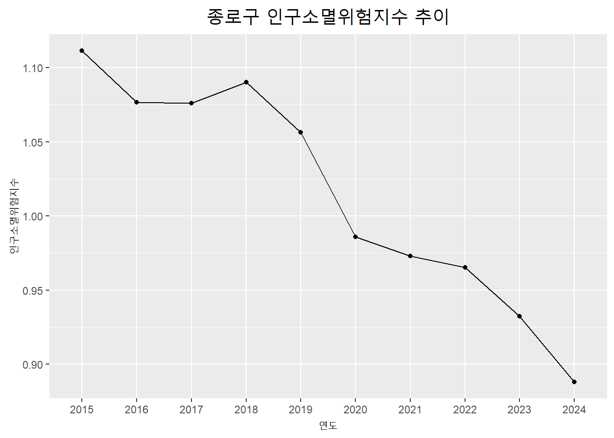

데이터 수집하기
실습 개요
이 실습은 R로 데이터를 수집하는 과정을 다룬다. R을 활용한 데이터 수집은 다양한 방법으로 진행될 수 있지만 여기서는 웹상의 데이터 파일 불러오기, 웹 스크레이핑, API를 이용하는 방식에 집중한다. 실습의 시작은 tidyverse 패키지를 불러오는 것이다.
1 웹상의 데이터 파일 불러오기
아마도 데이터를 수집하는 가장 단순한 방법은 웹상에 파일 형태로 존재하는 데이터를 R에서 불러오는 것일 것이다. readr 패키지에서 제공하는 다양한 데이터 불러오기 함수(예: read_csv())를 데이터의 URL에 적용하면 손쉽게 데이터를 획득할 수 있다.
students <- read_csv("https://pos.it/r4ds-students-csv")
students# A tibble: 6 × 5
`Student ID` `Full Name` favourite.food mealPlan AGE
<dbl> <chr> <chr> <chr> <chr>
1 1 Sunil Huffmann Strawberry yoghurt Lunch only 4
2 2 Barclay Lynn French fries Lunch only 5
3 3 Jayendra Lyne N/A Breakfast and lunch 7
4 4 Leon Rossini Anchovies Lunch only <NA>
5 5 Chidiegwu Dunkel Pizza Breakfast and lunch five
6 6 Güvenç Attila Ice cream Lunch only 6 그런데 엑셀 형식의 파일은 readxl 패키지가 제공하는 read_excel() 함수를 이용해 막바로 데이터를 불러오는 것이 불가능하다. openxlsx 패키지는 이러한 문제를 해결할 수 있게 해준다. 정말 다양한 함수를 제공하지만 read.xlsx() 함수가 URL을 통해 엑셀 데이터를 불러오는데 사용된다.
Var1 Var2 Var3 Var4 Var5 Var6 Var7
1 TRUE 1 1.00 a 42042 3209324 This NA
2 TRUE NA NA b 42041 <NA> NA
3 TRUE 2 1.34 c 42040 <NA> NA
4 FALSE 2 NA <NA> NA <NA> NA
5 FALSE 3 1.56 e NA <NA> NA
6 FALSE 1 1.70 f 42037 <NA> NA
7 NA NA NA <NA> 42036 <NA> NA
8 FALSE 2 23.00 h 42035 <NA> NA
9 FALSE 3 67.30 i 42034 <NA> NA
10 NA 1 123.00 <NA> 42033 <NA> NA2 웹스크레이핑
웹스크레이핑(web scraping)이란 웹페이지로부터 특정한 데이터를 추출하는 것을 의미한다. R에서 웹스크레이핑은 rvest 패키지가 담당하는데, reaxl 패키지와 마찬가지로 tidyverse의 핵심 패키지는 아니기 때문에 따로 불러와야 한다.
2.1 웹스크레이핑의 실제 1: 테이블이 하나 있는 경우
위키피디어의 한 항목(List of countries and dependencies by population)에는 표 하나가 포함되어 있다. 해당 표의 데이터를 수집한다.
url <- "https://en.wikipedia.org/wiki/List_of_countries_and_dependencies_by_population"
my_table <- url |>
read_html() |>
html_element("table") |>
html_table()
my_table# A tibble: 240 × 6
Location Population `% ofworld` Date Source (official or …¹ Notes
<chr> <chr> <chr> <chr> <chr> <chr>
1 World 8,232,000,000 100% 13 Jun … UN projection[1][3] ""
2 India 1,417,492,000 17.3% 1 Jul 2… Official projection[4] "[b]"
3 China 1,408,280,000 17.2% 31 Dec … Official estimate[5] "[c]"
4 United States 340,110,988 4.1% 1 Jul 2… Official estimate[6] "[d]"
5 Indonesia 284,438,782 3.5% 30 Jun … National annual proje… ""
6 Pakistan 241,499,431 2.9% 1 Mar 2… 2023 census result[8] "[e]"
7 Nigeria 223,800,000 2.7% 1 Jul 2… Official projection[9] ""
8 Brazil 213,421,037 2.6% 1 Jul 2… Official estimate[10] ""
9 Bangladesh 169,828,911 2.1% 14 Jun … 2022 census result[11] "[f]"
10 Russia 146,028,325 1.8% 1 Jan 2… Official estimate[13] "[g]"
# ℹ 230 more rows
# ℹ abbreviated name: ¹`Source (official or fromthe United Nations)`수집한 데이터를 가공해본다. 필요없는 컬럼을 제거하고, 컬럼 이름을 바꾸고, 몇몇 변수를 특정 형태의 타입(numeric, date)으로 변환하기 위한 과정이다.
my_table <- my_table |>
select(-6) |>
rename(
location = "Location",
population = "Population",
pop_pct = "% ofworld",
date = "Date",
source = "Source (official or fromthe United Nations)"
) |>
mutate(
population = str_remove_all(population, ","),
population = as.numeric(population),
pop_pct = str_remove(pop_pct, "%"),
pop_pct = as.numeric(pop_pct),
date = dmy(date)
)
my_table# A tibble: 240 × 5
location population pop_pct date source
<chr> <dbl> <dbl> <date> <chr>
1 World 8232000000 100 2025-06-13 UN projection[1][3]
2 India 1417492000 17.3 2025-07-01 Official projection[4]
3 China 1408280000 17.2 2024-12-31 Official estimate[5]
4 United States 340110988 4.1 2024-07-01 Official estimate[6]
5 Indonesia 284438782 3.5 2025-06-30 National annual projection[7]
6 Pakistan 241499431 2.9 2023-03-01 2023 census result[8]
7 Nigeria 223800000 2.7 2023-07-01 Official projection[9]
8 Brazil 213421037 2.6 2025-07-01 Official estimate[10]
9 Bangladesh 169828911 2.1 2022-06-14 2022 census result[11]
10 Russia 146028325 1.8 2025-01-01 Official estimate[13]
# ℹ 230 more rows코드에 포함된 parse_number()과 str_remove_all() 함수는 매우 유용한 함수이므로 잘 익혀 둘 필요가 있다. parse_number()함수는 readr 패키지에 포함되어 있는 것으로, 투입 벡터에서 오로지 숫자만 골라내 실수형 벡터를 생성해준다. 위의 예를 보자면, my_table 데이터 프레임의 population 컬럼은 인구수와 콤마가 결합된 문자형 벡터이므로 콤마를 제거하고 숫자만 추출할 필요가 있다. 유사한 함수에 parse_logical(), parse_integer(), parse_double(), parse_character(), parse_factor() 등이 있다. str_remove_all() 함수는 tidyverse의 핵심 패키지 중의 하나인 stringr 패키지에 포함되어 있는 것으로, 투입 벡터에서 특정한 문자나 문자 패턴을 제거해 준다. 위의 예를 보자면, my_table 데이터 프레임의 pop_pct 컬럼에는 %라는 부호가 포함되어 있기 때문에 그것을 제거할 필요가 있다. 그러므로 str_remove_all() 함수는 셀에 포함되어 있는 특정 문자 모두를 제거할 때 사용할 수 있는 함수이다. 유사한 함수에 str_remove()도 있는데, 이것은 셀에 포함되어 있는 특정 문자 중 단지 첫 번째 것만 제거한다. 문자열을 잘 다루려면 정규표현식(regular expression)에 대한 상당한 이해가 있어야 한다. 다음의 링크가 도움이 될 수 있을 것이다. https://bookdown.org/ahn_media/bookdown-demo/cleantool.html#%EC%A0%95%EA%B7%9C%ED%91%9C%ED%98%84%EC%8B%9Dregular-expressions
2.2 웹스크레이핑의 실제 2: 테이블이 둘 이상인 경우
위키피디아의 한 항목(List of FIPS country codes)에는 동일한 내용에 대해 여러 개의 표가 나타나 있다. 개별 표의 데이터를 수집한 후 결합하여 단일한 데이터 프레임을 구성한다.
url <- "https://en.wikipedia.org/wiki/List_of_FIPS_country_codes"
my_tables <- url |>
read_html() |>
html_elements("table") |> # 'element'가 아니라 'elements'이다.
html_table() |>
bind_rows()
my_tables# A tibble: 277 × 10
Code `Short-form name` .mw-parser-output .n…¹ .mw-parser-output .n…² ...3
<chr> <chr> <chr> <chr> <chr>
1 .mw-pa… Aruba <NA> <NA> <NA>
2 AC Antigua and Barb… <NA> <NA> <NA>
3 AD Akrotiri <NA> <NA> <NA>
4 AE United Arab Emir… <NA> <NA> <NA>
5 AF Afghanistan <NA> <NA> <NA>
6 AG Algeria <NA> <NA> <NA>
7 AJ Azerbaijan <NA> <NA> <NA>
8 AL Albania <NA> <NA> <NA>
9 AM Armenia <NA> <NA> <NA>
10 AN Andorra <NA> <NA> <NA>
# ℹ 267 more rows
# ℹ abbreviated names:
# ¹`.mw-parser-output .navbar{display:inline;font-size:88%;font-weight:normal}.mw-parser-output .navbar-collapse{float:left;text-align:left}.mw-parser-output .navbar-boxtext{word-spacing:0}.mw-parser-output .navbar ul{display:inline-block;white-space:nowrap;line-height:inherit}.mw-parser-output .navbar-brackets::before{margin-right:-0.125em;content:"[ "}.mw-parser-output .navbar-brackets::after{margin-left:-0.125em;content:" ]"}.mw-parser-output .navbar li{word-spacing:-0.125em}.mw-parser-output .navbar a>span,.mw-parser-output .navbar a>abbr{text-decoration:inherit}.mw-parser-output .navbar-mini abbr{font-variant:small-caps;border-bottom:none;text-decoration:none;cursor:inherit}.mw-parser-output .navbar-ct-full{font-size:114%;margin:0 7em}.mw-parser-output .navbar-ct-mini{font-size:114%;margin:0 4em}html.skin-theme-clientpref-night .mw-parser-output .navbar li a abbr{color:var(--color-base)!important}@media(prefers-color-scheme:dark){html.skin-theme-clientpref-os .mw-parser-output .navbar li a abbr{color:var(--color-base)!important}}@media print{.mw-parser-output .navbar{display:none!important}}vteGeocode systems...1`,
# ²`.mw-parser-output .navbar{display:inline;font-size:88%;font-weight:normal}.mw-parser-output .navbar-collapse{float:left;text-align:left}.mw-parser-output .navbar-boxtext{word-spacing:0}.mw-parser-output .navbar ul{display:inline-block;white-space:nowrap;line-height:inherit}.mw-parser-output .navbar-brackets::before{margin-right:-0.125em;content:"[ "}.mw-parser-output .navbar-brackets::after{margin-left:-0.125em;content:" ]"}.mw-parser-output .navbar li{word-spacing:-0.125em}.mw-parser-output .navbar a>span,.mw-parser-output .navbar a>abbr{text-decoration:inherit}.mw-parser-output .navbar-mini abbr{font-variant:small-caps;border-bottom:none;text-decoration:none;cursor:inherit}.mw-parser-output .navbar-ct-full{font-size:114%;margin:0 7em}.mw-parser-output .navbar-ct-mini{font-size:114%;margin:0 4em}html.skin-theme-clientpref-night .mw-parser-output .navbar li a abbr{color:var(--color-base)!important}@media(prefers-color-scheme:dark){html.skin-theme-clientpref-os .mw-parser-output .navbar li a abbr{color:var(--color-base)!important}}@media print{.mw-parser-output .navbar{display:none!important}}vteGeocode systems...2`
# ℹ 5 more variables: ...4 <chr>, ...5 <chr>, ...6 <chr>, X1 <chr>, X2 <chr>수집한 데이터를 약간 가공한다. 역시 필요한 컬럼만 남기고, 이름을 바꿔준다. 마지막 str_extract는 Aruba의 단축어에 원치 않는 문자열이 추가되어 있어 제거하기 위한 코드이다.
my_tables <- my_tables |>
select(1, 2) |>
rename(
code = "Code",
short_name = "Short-form name"
) |>
mutate(
code = str_extract(code, "[A-Z][A-Z]") # 알파벳 두 개가 연결되어 있는 것을 추출
)
my_tables# A tibble: 277 × 2
code short_name
<chr> <chr>
1 AA Aruba
2 AC Antigua and Barbuda
3 AD Akrotiri
4 AE United Arab Emirates
5 AF Afghanistan
6 AG Algeria
7 AJ Azerbaijan
8 AL Albania
9 AM Armenia
10 AN Andorra
# ℹ 267 more rows간혹 테이블을 불러올 때 데이터가 깨지는 경우도 발생한다. 이는 인코딩 방식의 문제인데, 아래와 같이 인코딩 아규먼트를 추가하면 해결된다. 보통 “EUC-KR”이나 “UTF-8” 둘 중 하나는 제대로 작동한다.
한 번 네이버가 제공하는 주식 거래 상위 품목을 크롤링해보자.
library(DT)
kospi <- "https://finance.naver.com/sise/sise_quant.naver?sosok=0"
kospi_table <- kospi |>
read_html(, encoding = "EUC-KR") |>
html_elements("table") |>
html_table() |>
_[[2]] |>
filter(is.na(N) == FALSE)
datatable(kospi_table)3 API의 활용
KOSIS를 포함한 많은 대한민국의 데이터 포털은 개방 API 서비스를 제공하고 있다. KOSIS는 공유서비스 홈페이지(https://kosis.kr/openapi/)를 통해 Open API를 통한 데이터 수집을 권장하고 있다.
앞에서 설명한 것처럼, API용 패키지를 직접 사용할 수도 있지만, 래퍼 패키지가 존재하기만 한다면 그것을 활용하는 것이 훨씬 손쉬운 옵션일 수 있다. 놀랍게도 한국의 주석훈(Seokhoon Joo)이라는 분이 그러한 기능을 하는 kosis(https://cran.r-project.org/web/packages/kosis/index.html)라는 패키지를 이미 개발해 두었고, 그것을 활용하고자 한다.
실습 주제는 2024년 센서스 인구 기준으로 전국의 17개 시도별 ’지방소멸위험지수’를 계산하고 그래프의 형태로 표현하는 것이다.
3.1 KOSIS에서 API KEY 받기
먼저 API를 활용하기 위해 기관으로부터 KEY를 발급받아야 한다. 이를 위해 통계청에 회원가입을 한 후, KEY를 요청해야 한다. 과정은 아래와 같다.
KOSIS 공유서비스 웹페이지(https://kosis.kr/openapi/) 접속
-
상단의 [활용신청] 탭 클릭
- 통계청의 ONE-ID로 통합로그인(없으면 회원가입 필수)
-
활용신청하여 사용자 인증키 획득
- 사용자 인증키는 마이페이지에서 언제든 확인 가능
3.2 패키지 설치 및 인증키 등록
우선 kosis 패키지를 오른쪽 하단 윈도우의 Packages 탭을 활용하여 인스톨한다. 이후에 아래와 같이 kosis와 tidyverse 패키지를 불러온다.
library(kosis)다음으로, kosis 패키지의 kosis.setKey() 함수를 이용하여 인증키를 등록한다. Your Key Here 자리에 부여받은 인증키를 붙여 넣는다.
kosis.setKey(apiKey = "Your Key Here")3.3 데이터 추출
이제 통계청 홈페이지에 접속해서 데이터를 불러와본다. 과정은 아래와 같다.
KOSIS에 접속 후 로그인
-
데이터에 접근 후 URL 생성
[국내통계]-[주제별 통계]-[인구]-[인구총조사]-[인구부문]-[총조사인구(2015년 이후)]-[전수부문 (등록센서스, 2015년 이후)]-[전수기본표]-[연령 및 성별 인구]
항목: ‘총인구(명)’, ‘총인구_남자(명)’, ’총인구_여자(명)’만 선택(더 많은 항목을 선택하면 데이터가 너무 커 에러가 발생)
행정구역별(읍면동): ‘1 레벨’과 ’2 레벨’ 선택(’1 레벨’은 시도 수준, ’2 레벨’은 시군구 수준)
조회기간: ‘기간설정’ 버튼을 누른 후, 기간설정이 2024~2024년인지 확인한다.
응답필드: 하나씩 눌러 모두 선택한 후, ‘URL생성’ 탭을 클릭한다. 그리고 나서 ‘URL 복사’ 탭을 클릭한다. URL 속에 api key가 포함되어 있음을 확인한다.
생성한 URL로부터 데이터 획득
your_url <- "Your URL"
data_api <- getStatDataFromURL(url = your_url)getStatDataFromURL 함수의 아규먼트에 위에서 생성한 URL을 입력하면, 다운로드 과정 없이 곧바로 데이터를 획득할 수 있다.
3.4 데이터 정리 및 변형
아래와 같이 데이터를 정리 및 변형한다. 최종적으로 지역별 지역소멸위험지수를 산출한다.
data <- data_api |>
select(C1, C1_NM, C2_NM, ITM_ID, DT) |>
# C1: 행정구역 코드 / C1_NM: 행정구역 이름
# C2: 연령 코드 / C2_NM: 연령대
# ITM_ID: 성별 코드 / DT: 인구 수
mutate(
DT = na_if(DT, "X"),
across(c(C1, DT), as.numeric),
ITM_ID = case_match(
ITM_ID,
"T00" ~ "T",
"T01" ~ "M",
"T02" ~ "F"),
) |>
unite("gender_age", ITM_ID, C2_NM, sep = "_") |>
pivot_wider(
id_cols = c(C1, C1_NM),
names_from = gender_age,
values_from = DT
) |>
mutate(
index = (`F_20~24세` + `F_25~29세` + `F_30~34세` + `F_35~39세`) / `T_65세이상`
) |>
select(
C1, C1_NM, index
)na_if() 함수는 두 개의 인수를 받는데, 첫번째는 벡터(혹은 열), 두번째는 특정 값이다. 두 값을 받아 해당 열의 특정 값을 결측치로 바꾸는 역할을 한다. 여기서는 DT 열에 포함된 ’X’라는 값을 결측치로 바꿔 분석에서 제외했다. 반대로, replace_na()라는 함수는 이미 NA(결측치)로 되어 있는 값을 다른 값으로 채울 때 사용된다.
시도 데이터와 시군구 데이터를 분리하여 저장한다.
3.5 그래프 작성
인구소멸위험지수 연구에서 주로 사용되는 5개의 위험도 클래스의 구분법을 적용하고, 위험도 클래스별로 특정한 색상을 적용하고, 그래프의 범례에 5개의 클래스가 모두 나타나게 하려다보니 코드가 조금 복잡해졌다.
data_sido <- data_sido |>
mutate(
index_class = case_when(
index < 0.2 ~ "1",
index >= 0.2 & index < 0.5 ~ "2",
index >= 0.5 & index < 1.0 ~ "3",
index >= 1.0 & index < 1.5 ~ "4",
index >= 1.5 ~ "5"
),
index_class = factor(index_class, levels = as.character(1:5))
)
class_color <- c("1" = "#d7191c", "2" = "#fdae61",
"3" = "#ffffbf", "4" = "#a6d96a",
"5" = "#1a9641")
data_sido |>
ggplot(aes(x = index, y = fct_reorder(C1_NM, index))) +
geom_col(aes(fill = index_class), show.legend = TRUE) +
geom_text(aes(label = format(round(index, digits = 3),
nsmall = 3)), hjust = -0.1) +
scale_x_continuous(limits = c(0, 1.5)) +
scale_fill_manual(name = "Classes",
labels = c("< 0.2", "0.2 ~ 0.5", "0.5 ~ 1.0",
"1.0 ~ 1.5", ">= 1.5"),
values = class_color, drop = FALSE) +
labs(title = "인구소멸위험지수, 2024년",
x = "인구소멸위험지수",
y = "")
이렇게 KOSIS 홈페이지에서 URL을 직접 지정하지 않고도 데이터를 불러오는 방법이 있다. getStatData 함수로, 기관명과 데이터 코드를 아규먼트에 입력하면 해당 데이터를 불러올 수 있다. 가령 방금 실습에서 사용한 데이터는 통계청의 2015년 인구총조사 전수부문의 연령 및 성별인구에 해당한다. 이때 통계청의 기관 코드는 101, 해당 데이터의 코드는 DT_1IN503이다.
아래의 코드는 여기에 몇 개의 아규먼트를 더 추가하여 서울특별시 종로구의 2015년부터 2022년까지의 데이터를 불러오고, 이를 바탕으로 인구소멸지수를 계산하여 그 추이를 시각화 한 것이다.
aoi_code <- "11010" # 서울특별시 종로구 코드
aoi <- getStatData(orgId = 101, tblId = "DT_1IN1503", prdSe = "Y",
startPrdDe = "2015", endPrdDe = "2024",
objL1 = aoi_code, objL2 = "ALL") |>
filter(nchar(C2) == 3)
aoi <- aoi |>
select(C1, C1_NM, C2, C2_NM, ITM_ID, ITM_NM, DT, PRD_DE) |>
filter(ITM_ID == "T00" | ITM_ID == "T01" | ITM_ID == "T02") |>
mutate(
DT = na_if(DT, "X"),
across(c(C1, DT), as.numeric),
ITM_ID = case_match(
ITM_ID, "T00" ~ "T",
"T01" ~ "M",
"T02" ~ "F"),
) |>
unite("gender_age", ITM_ID, C2_NM, sep = "_") |>
pivot_wider(
id_cols = c(C1, C1_NM, PRD_DE),
names_from = gender_age,
values_from = DT
) |>
mutate(
index = (`F_20~24세` + `F_25~29세` + `F_30~34세` + `F_35~39세`) / `T_65세이상`
) |>
select(
C1, C1_NM, index, PRD_DE
)
region <- aoi$C1_NM[1]aoi |>
ggplot(aes(x=PRD_DE, y=index)) +
geom_point() +
geom_line(group = 1, linewidth = 0.5) +
ggtitle(paste0(region, " 인구소멸위험지수 추이")) +
xlab(label = "연도") +
ylab(label = "인구소멸위험지수") +
theme(plot.title = element_text(size = 18, hjust=0.5))
aoi_code에 내가 원하는 지역의 코드를 넣으면 마찬가지로 해당 관심지역의 인구소멸위험지수 추이를 관측할 수 있다. 예컨대 인구가 빠르게 증가하는 경기 김포시는 “31230”, 화성시는 “31240”이고, 소멸지수가 가장 높은 경북 상주시는 “37080”, 경북 문경시는 “37090”이다. 제공한 코드에서 한번 aoi_code 부분만 변경해보자.
한편, 이렇게 URL 없이 데이터를 불러오는 경우 KOSIS에서 직접 조정하는 것에 비해 덜 번거롭지만 제한사항도 많다. 가령 복수의 지역을 불러오는 것이 반복문을 사용하지 않고서는 불가능하고, 불필요한 데이터를 빼고 가져오기도 어렵다. 그러나 startPrdDe와 endPrdDe 아규먼트를 이용해 데이터를 시계열로 수집하고자 하는 측면에서는 유용하다.
그러므로 수집하고자 하는 데이터를 잘 파악해서 API를 활용해보자.
3.6 cf) KOSIS API를 활용한 함수 작성
마지막으로, API를 활용한 함수를 소개한다. API를 신청할 때 보았듯, 이는 웹/앱 애플리케이션을 제작하기 위한 용도로 주로 사용된다.
이와 관련된 매우 간단한 예시로, 학생에게 인구소멸지수가 궁금한 지역을 검색해보도록 하는 활동을 구상한다고 가정해보자. 학생이 매번 코드를 작성하며 확인하기란 사실상 불가능하다. 그런데 위에서 사용한 코드와 API를 활용하면 함수를 어렵지 않게 생성할 수 있다.
예컨대 교사가 아래와 같이 exInd() 함수를 한번 작성해두면, 학생은 단 한 줄의 코드만 입력해도 금방 지역의 인구소멸지수의 추이를 탐색해볼 수 있을 것이다.
# 함수 생성: 교사 작성 부분
exInd <- function(){
# Library
library(tidyverse)
library(kosis)
library(DT)
library(openxlsx)
# Table for Searching Region Code
region_table <- read.xlsx("https://github.com/Sechang-Kim/gis-lab/raw/download/korea-sigungu-code(2022).xlsx")
print(datatable(region_table))
# Input Arguments
aoi_code <- readline('지역 코드를 입력하세요: ')
start <- as.numeric(readline('시작 연도를 입력하세요: '))
end <- as.numeric(readline('종료 연도를 입력하세요: '))
# Data Request
aoi <- getStatData(orgId = 101, tblId = "DT_1IN1503", prdSe = "Y",
startPrdDe = start, endPrdDe = end,
objL1 = aoi_code, objL2 = "ALL") |>
filter(nchar(C2) == 3) # Delete 1-age interval(Only 5-age interval)
# Data Cleansing
aoi <- aoi |>
select(C1, C1_NM, C2, C2_NM, ITM_ID, ITM_NM, DT, PRD_DE) |>
filter(ITM_ID == "T00" | ITM_ID == "T01" | ITM_ID == "T02") |>
mutate(
DT = na_if(DT, "X"),
across(c(C1, DT), as.numeric),
ITM_ID = case_match(
ITM_ID, "T00" ~ "T",
"T01" ~ "M",
"T02" ~ "F"),
) |>
unite("gender_age", ITM_ID, C2_NM, sep = "_") |>
pivot_wider(
id_cols = c(C1, C1_NM, PRD_DE),
names_from = gender_age,
values_from = DT
) |>
mutate(
index = (`F_20~24세` + `F_25~29세` + `F_30~34세` + `F_35~39세`) / `T_65세이상`
) |>
select(
C1, C1_NM, index, PRD_DE
)
## Visualization
region <- aoi$C1_NM[1] # For Auto-Plot Title
vis <- aoi |>
ggplot(aes(x=PRD_DE, y=index)) +
geom_point() +
geom_line(group = 1, linewidth = 0.5) +
ggtitle(paste0(region, " 인구소멸위험지수 추이")) +
xlab(label = "연도") +
ylab(label = "인구소멸위험지수") +
theme(plot.title = element_text(size = 18, hjust=0.5))
return(vis)
}# 함수 실행: 학생 작성 부분
exInd()